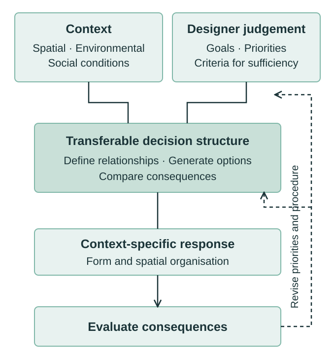

Research / Architectural theory
Reframing Genericity in Design
A shared way of making design decisions can produce different forms in different contexts.
What should transfer from one design project to another?
The manuscript argues for transferring a structure of reasoning: how conditions are represented, priorities are stated and alternatives are compared. Each project supplies its own context and priorities, so a shared procedure can lead to distinct spatial outcomes.
The argument at a glance

What transfers, and what changes?
| Layer | Across projects |
|---|---|
| Decision structure | Transfer how relationships are defined, alternatives are generated and consequences are compared. |
| Context | Reconsider spatial, environmental and social conditions for each project. |
| Design judgement | Set and revise goals, priorities and criteria for a sufficient result. |
| Spatial outcome | Allow form and organisation to emerge from those choices. |
Context is an input to reasoning, not simply an appearance to reproduce. Making priorities explicit does not make them neutral.
Why this matters to my practice
This perspective connects my work in geometry, environmental simulation and agent-based modelling: a computational workflow should make its assumptions, choices and consequences easier to examine.
The manuscript considers digital twins as possible infrastructure for comparing scenarios and revisiting decisions. Their role here is to support judgement through relationships and feedback.
About the manuscript
Reframing Genericity in Design: Context, Identity, and Procedural Universality — Hossein Nazari. This short overview presents the research position; the full manuscript is not shared here. The work is conceptual and remains subject to peer review and revision.